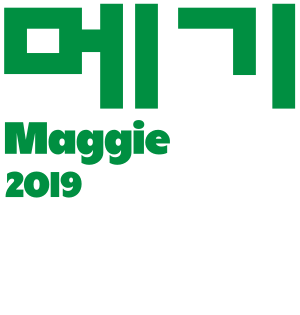
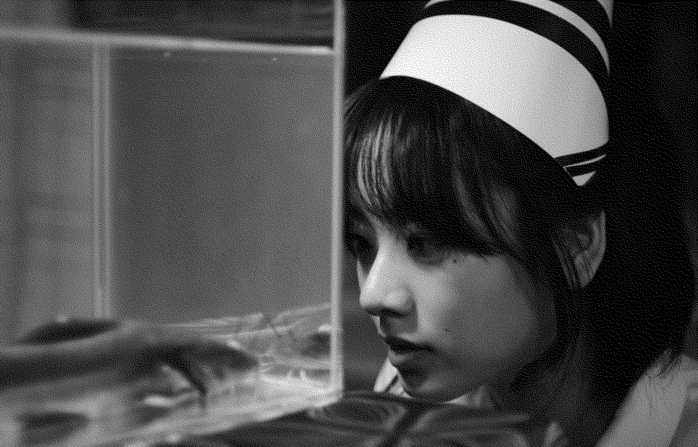

여윤영
범인
메기
Maggie
2019년
감독 이옥섭
드라마/미스터리
89분
여윤영 역
이주영

여윤영의 첫 번째 대사
하나, 둘, 셋, 넷, 다섯, 여덟, 일곱, 여덟 개. 응? 에헤이 아저씨! 아저씨 딱 걸렸어 나와 봐요. 나와 봐. 바쁜 척 하지말고 빨리 나와 봐. 아저씨 내가 잡았어. 세탁 골라서 하죠? 이 종이봐요. 어? 여기서 나왔다고. 바빴어? 아니기는. 우리가 드라이 맡기는 것도 아니고 물세탁 하는 건데 어떻게 이게 살아남아, 종이가. 믿고 하는 건데 이럼 안 되지. 다음 번엔 두 배로 잘해주세요, 응? 계산됐죠? 갈게. 안 먹어.
00:04:03

여윤영의 마지막 대사
여자 때린 적 있어? 뭐?
01:24:43